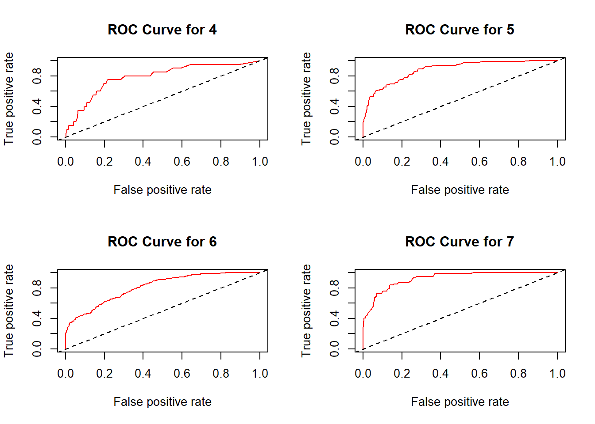

Chapter 7 Multi Variable Classification
7.1 Data
# Load the Wine Quality dataset
url <- "https://archive.ics.uci.edu/ml/machine-learning-databases/wine-quality/winequality-red.csv"
df <- read.csv(url, sep=";") names(df)[names(df) == "quality"] <- "y"
df <- df[c("y", setdiff(names(df), "y"))]
df$y <- as.factor(df$y)
glimpse(df)## Rows: 1,599
## Columns: 12
## $ y <fct> 5, 5, 5, 6, 5, 5, 5, 7, 7, 5, 5, 5, 5, 5, 5, 5, 7…
## $ fixed.acidity <dbl> 7.4, 7.8, 7.8, 11.2, 7.4, 7.4, 7.9, 7.3, 7.8, 7.5…
## $ volatile.acidity <dbl> 0.700, 0.880, 0.760, 0.280, 0.700, 0.660, 0.600, …
## $ citric.acid <dbl> 0.00, 0.00, 0.04, 0.56, 0.00, 0.00, 0.06, 0.00, 0…
## $ residual.sugar <dbl> 1.9, 2.6, 2.3, 1.9, 1.9, 1.8, 1.6, 1.2, 2.0, 6.1,…
## $ chlorides <dbl> 0.076, 0.098, 0.092, 0.075, 0.076, 0.075, 0.069, …
## $ free.sulfur.dioxide <dbl> 11, 25, 15, 17, 11, 13, 15, 15, 9, 17, 15, 17, 16…
## $ total.sulfur.dioxide <dbl> 34, 67, 54, 60, 34, 40, 59, 21, 18, 102, 65, 102,…
## $ density <dbl> 0.9978, 0.9968, 0.9970, 0.9980, 0.9978, 0.9978, 0…
## $ pH <dbl> 3.51, 3.20, 3.26, 3.16, 3.51, 3.51, 3.30, 3.39, 3…
## $ sulphates <dbl> 0.56, 0.68, 0.65, 0.58, 0.56, 0.56, 0.46, 0.47, 0…
## $ alcohol <dbl> 9.4, 9.8, 9.8, 9.8, 9.4, 9.4, 9.4, 10.0, 9.5, 10.…##
## 3 4 5 6 7 8
## 10 53 681 638 199 18we need to drop 3 and 8
7.2 AUCs
n <- nrow(df)
ind <- unique(sample(n, n, T))
train <- df[ind, ]
test <- df[-ind, ]
rf <- randomForest(y ~ ., data = train, ntree = 500)
phat <- predict(rf, test, type = "prob")
auc_list <- list()
for (level in levels(test$y)) {
# Making the current level the positive class
actual <- ifelse(test$y == level, 1, 0)
pred <- prediction(phat[, level], actual)
perf <- performance(pred, measure = "auc")
auc_list[[level]] <- as.numeric(perf@y.values)
}
auc_list## $`4`
## [1] 0.828346
##
## $`5`
## [1] 0.8633025
##
## $`6`
## [1] 0.8037732
##
## $`7`
## [1] 0.9092694# Prepare plotting
par(mfrow = c(2, ceiling(length(levels(test$y)) / 2))) # Adjust layout based on number of levels
# Loop through each level to plot ROC curve
for (level in levels(test$y)) {
actual <- ifelse(test$y == level, 1, 0)
pred <- prediction(phat[, level], actual)
perf <- performance(pred, "tpr", "fpr")
# Plotting the ROC curve
plot(perf, col = "red", main = paste("ROC Curve for", level))
abline(a = 0, b = 1, lty = 2) # Adding a diagonal line
}
7.3 Confusion Table
r <- 100
n <- nrow(df)
num_classes <- length(levels(df$y))
auc_matrix <- matrix(0, nrow = r, ncol = num_classes)
colnames(auc_matrix) <- levels(df$y)
cm_list <- vector("list", r)
for (i in 1:r) {
ind <- sample(n, n, replace = TRUE)
tr <- df[ind, ]
ts <- df[-ind, ]
rf <- randomForest(y ~ ., data = tr, ntree = 500)
ph <- predict(rf, ts, type = "prob")
pc <- apply(ph, 1, which.max)
pc <- levels(ts$y)[pc]
cm <- confusionMatrix(factor(pc), factor(ts$y))
cm_list[[i]] <- as.matrix(cm$table)
}
# Calculate the average confusion matrix
cm_avg <- Reduce("+", cm_list) / length(cm_list)
cm_avg## Reference
## Prediction 4 5 6 7
## 4 0.18 0.29 0.35 0.06
## 5 13.06 194.52 55.72 4.07
## 6 6.14 51.46 163.33 35.52
## 7 0.28 1.81 13.91 34.49We see huge imbalances in data in the target variable but i just wanted to leave this here as a basic idea. in truth we would drop some categories and deal with it better.